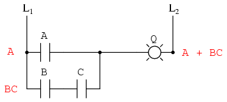
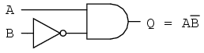
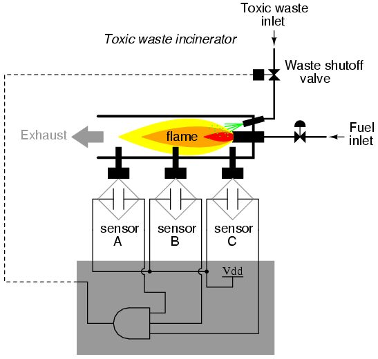
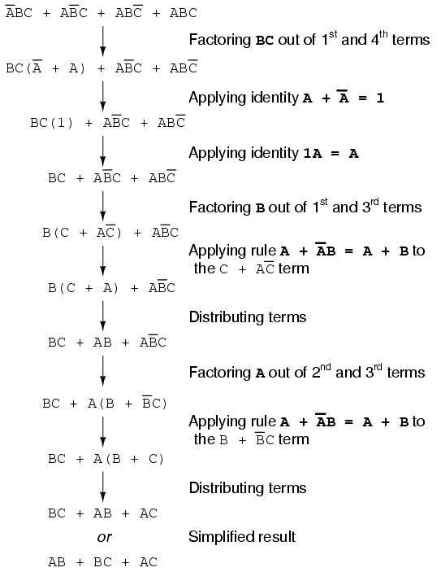
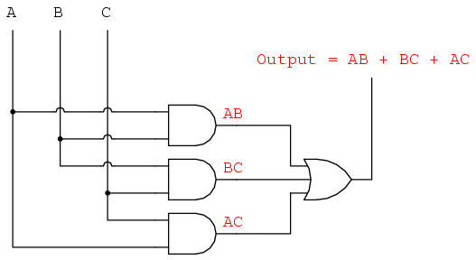
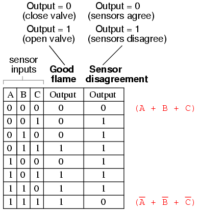
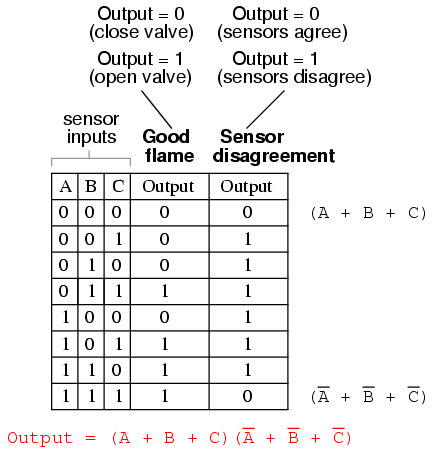

0 + 0 = 0
0 + 1 = 1
1 + 0 = 1
1 + 1 = 1
Rules of addition for Boolean quantities
"Gee Toto, I don't think we're in Kansas anymore!"
Dorothy, in The Wizard of Oz
Mathematical rules are based on the defining limits we place on the particular numerical quantities dealt with. When we say that 1 + 1 = 2 or 3 + 4 = 7, we are implying the use of integer quantities: the same types of numbers we all learned to count in elementary education. What most people assume to be self-evident rules of arithmetic -- valid at all times and for all purposes -- actually depend on what we define a number to be.
For instance, when calculating quantities in AC circuits, we find that the "real" number quantities which served us so well in DC circuit analysis are inadequate for the task of representing AC quantities. We know that voltages add when connected in series, but we also know that it is possible to connect a 3-volt AC source in series with a 4-volt AC source and end up with 5 volts total voltage (3 + 4 = 5)! Does this mean the inviolable and self-evident rules of arithmetic have been violated? No, it just means that the rules of "real" numbers do not apply to the kinds of quantities encountered in AC circuits, where every variable has both a magnitude and a phase. Consequently, we must use a different kind of numerical quantity, or object, for AC circuits (complex numbers, rather than real numbers), and along with this different system of numbers comes a different set of rules telling us how they relate to one another.
An expression such as "3 + 4 = 5" is nonsense within the scope and definition of real numbers, but it fits nicely within the scope and definition of complex numbers (think of a right triangle with opposite and adjacent sides of 3 and 4, with a hypotenuse of 5). Because complex numbers are two-dimensional, they are able to "add" with one another trigonometrically as single-dimension "real" numbers cannot.
Logic is much like mathematics in this respect: the so-called "Laws" of logic depend on how we define what a proposition is. The Greek philosopher Aristotle founded a system of logic based on only two types of propositions: true and false. His bivalent (two-mode) definition of truth led to the four foundational laws of logic: the Law of Identity (A is A); the Law of Non-contradiction (A is not non-A); the Law of the Excluded Middle (either A or non-A); and the Law of Rational Inference. These so-called Laws function within the scope of logic where a proposition is limited to one of two possible values, but may not apply in cases where propositions can hold values other than "true" or "false." In fact, much work has been done and continues to be done on "multivalued," or fuzzy logic, where propositions may be true or false to a limited degree. In such a system of logic, "Laws" such as the Law of the Excluded Middle simply do not apply, because they are founded on the assumption of bivalence. Likewise, many premises which would violate the Law of Non-contradiction in Aristotelian logic have validity in "fuzzy" logic. Again, the defining limits of propositional values determine the Laws describing their functions and relations.
The English mathematician George Boole (1815-1864) sought to give symbolic form to Aristotle's system of logic. Boole wrote a treatise on the subject in 1854, titled An Investigation of the Laws of Thought, on Which Are Founded the Mathematical Theories of Logic and Probabilities, which codified several rules of relationship between mathematical quantities limited to one of two possible values: true or false, 1 or 0. His mathematical system became known as Boolean algebra.
All arithmetic operations performed with Boolean quantities have but one of two possible outcomes: either 1 or 0. There is no such thing as "2" or "-1" or "1/2" in the Boolean world. It is a world in which all other possibilities are invalid by fiat. As one might guess, this is not the kind of math you want to use when balancing a checkbook or calculating current through a resistor. However, Claude Shannon of MIT fame recognized how Boolean algebra could be applied to on-and-off circuits, where all signals are characterized as either "high" (1) or "low" (0). His 1938 thesis, titled A Symbolic Analysis of Relay and Switching Circuits, put Boole's theoretical work to use in a way Boole never could have imagined, giving us a powerful mathematical tool for designing and analyzing digital circuits.
In this chapter, you will find a lot of similarities between Boolean algebra and "normal" algebra, the kind of algebra involving so-called real numbers. Just bear in mind that the system of numbers defining Boolean algebra is severely limited in terms of scope, and that there can only be one of two possible values for any Boolean variable: 1 or 0. Consequently, the "Laws" of Boolean algebra often differ from the "Laws" of real-number algebra, making possible such statements as 1 + 1 = 1, which would normally be considered absurd. Once you comprehend the premise of all quantities in Boolean algebra being limited to the two possibilities of 1 and 0, and the general philosophical principle of Laws depending on quantitative definitions, the "nonsense" of Boolean algebra disappears.
It should be clearly understood that Boolean numbers are not the same as binary numbers. Whereas Boolean numbers represent an entirely different system of mathematics from real numbers, binary is nothing more than an alternative notation for real numbers. The two are often confused because both Boolean math and binary notation use the same two ciphers: 1 and 0. The difference is that Boolean quantities are restricted to a single bit (either 1 or 0), whereas binary numbers may be composed of many bits adding up in place-weighted form to a value of any finite size. The binary number 100112 ("nineteen") has no more place in the Boolean world than the decimal number 210 ("two") or the octal number 328 ("twenty-six").
Let us begin our exploration of Boolean algebra by adding numbers together:
The first three sums make perfect sense to anyone familiar with elementary addition. The last sum, though, is quite possibly responsible for more confusion than any other single statement in digital electronics, because it seems to run contrary to the basic principles of mathematics. Well, it does contradict principles of addition for real numbers, but not for Boolean numbers. Remember that in the world of Boolean algebra, there are only two possible values for any quantity and for any arithmetic operation: 1 or 0. There is no such thing as "2" within the scope of Boolean values. Since the sum "1 + 1" certainly isn't 0, it must be 1 by process of elimination.
It does not matter how many or few terms we add together, either. Consider the following sums:
Take a close look at the two-term sums in the first set of equations. Does that pattern look familiar to you? It should! It is the same pattern of 1's and 0's as seen in the truth table for an OR gate. In other words, Boolean addition corresponds to the logical function of an "OR" gate, as well as to parallel switch contacts:
There is no such thing as subtraction in the realm of Boolean mathematics. Subtraction implies the existence of negative numbers: 5 - 3 is the same thing as 5 + (-3), and in Boolean algebra negative quantities are forbidden. There is no such thing as division in Boolean mathematics, either, since division is really nothing more than compounded subtraction, in the same way that multiplication is compounded addition.
Multiplication is valid in Boolean algebra, and thankfully it is the same as in real-number algebra: anything multiplied by 0 is 0, and anything multiplied by 1 remains unchanged:
This set of equations should also look familiar to you: it is the same pattern found in the truth table for an AND gate. In other words, Boolean multiplication corresponds to the logical function of an "AND" gate, as well as to series switch contacts:
Like "normal" algebra, Boolean algebra uses alphabetical letters to denote variables. Unlike "normal" algebra, though, Boolean variables are always CAPITAL letters, never lower-case. Because they are allowed to possess only one of two possible values, either 1 or 0, each and every variable has a complement: the opposite of its value. For example, if variable "A" has a value of 0, then the complement of A has a value of 1. Boolean notation uses a bar above the variable character to denote complementation, like this:
In written form, the complement of "A" denoted as "A-not" or "A-bar". Sometimes a "prime" symbol is used to represent complementation. For example, A' would be the complement of A, much the same as using a prime symbol to denote differentiation in calculus rather than the fractional notation d/dt. Usually, though, the "bar" symbol finds more widespread use than the "prime" symbol, for reasons that will become more apparent later in this chapter.
Boolean complementation finds equivalency in the form of the NOT gate, or a normally-closed switch or relay contact:
The basic definition of Boolean quantities has led to the simple rules of addition and multiplication, and has excluded both subtraction and division as valid arithmetic operations. We have a symbology for denoting Boolean variables, and their complements. In the next section we will proceed to develop Boolean identities.
In mathematics, an identity is a statement true for all possible values of its variable or variables. The algebraic identity of x + 0 = x tells us that anything (x) added to zero equals the original "anything," no matter what value that "anything" (x) may be. Like ordinary algebra, Boolean algebra has its own unique identities based on the bivalent states of Boolean variables.
The first Boolean identity is that the sum of anything and zero is the same as the original "anything." This identity is no different from its real-number algebraic equivalent:
No matter what the value of A, the output will always be the same: when A=1, the output will also be 1; when A=0, the output will also be 0.
The next identity is most definitely different from any seen in normal algebra. Here we discover that the sum of anything and one is one:
No matter what the value of A, the sum of A and 1 will always be 1. In a sense, the "1" signal overrides the effect of A on the logic circuit, leaving the output fixed at a logic level of 1.
Next, we examine the effect of adding A and A together, which is the same as connecting both inputs of an OR gate to each other and activating them with the same signal:

In real-number algebra, the sum of two identical variables is twice the original variable's value (x + x = 2x), but remember that there is no concept of "2" in the world of Boolean math, only 1 and 0, so we cannot say that A + A = 2A. Thus, when we add a Boolean quantity to itself, the sum is equal to the original quantity: 0 + 0 = 0, and 1 + 1 = 1.
Introducing the uniquely Boolean concept of complementation into an additive identity, we find an interesting effect. Since there must be one "1" value between any variable and its complement, and since the sum of any Boolean quantity and 1 is 1, the sum of a variable and its complement must be 1:
Just as there are four Boolean additive identities (A+0, A+1, A+A, and A+A'), so there are also four multiplicative identities: Ax0, Ax1, AxA, and AxA'. Of these, the first two are no different from their equivalent expressions in regular algebra:
The third multiplicative identity expresses the result of a Boolean quantity multiplied by itself. In normal algebra, the product of a variable and itself is the square of that variable (3 x 3 = 32 = 9). However, the concept of "square" implies a quantity of 2, which has no meaning in Boolean algebra, so we cannot say that A x A = A2. Instead, we find that the product of a Boolean quantity and itself is the original quantity, since 0 x 0 = 0 and 1 x 1 = 1:
The fourth multiplicative identity has no equivalent in regular algebra because it uses the complement of a variable, a concept unique to Boolean mathematics. Since there must be one "0" value between any variable and its complement, and since the product of any Boolean quantity and 0 is 0, the product of a variable and its complement must be 0:
To summarize, then, we have four basic Boolean identities for addition and four for multiplication:
Another identity having to do with complementation is that of the double complement: a variable inverted twice. Complementing a variable twice (or any even number of times) results in the original Boolean value. This is analogous to negating (multiplying by -1) in real-number algebra: an even number of negations cancel to leave the original value:
Another type of mathematical identity, called a "property" or a "law," describes how differing variables relate to each other in a system of numbers. One of these properties is known as the commutative property, and it applies equally to addition and multiplication. In essence, the commutative property tells us we can reverse the order of variables that are either added together or multiplied together without changing the truth of the expression:
Along with the commutative properties of addition and multiplication, we have the associative property, again applying equally well to addition and multiplication. This property tells us we can associate groups of added or multiplied variables together with parentheses without altering the truth of the equations.
Lastly, we have the distributive property, illustrating how to expand a Boolean expression formed by the product of a sum, and in reverse shows us how terms may be factored out of Boolean sums-of-products:

To summarize, here are the three basic properties: commutative, associative, and distributive.
Boolean algebra finds its most practical use in the simplification of logic circuits. If we translate a logic circuit's function into symbolic (Boolean) form, and apply certain algebraic rules to the resulting equation to reduce the number of terms and/or arithmetic operations, the simplified equation may be translated back into circuit form for a logic circuit performing the same function with fewer components. If equivalent function may be achieved with fewer components, the result will be increased reliability and decreased cost of manufacture.
To this end, there are several rules of Boolean algebra presented in this section for use in reducing expressions to their simplest forms. The identities and properties already reviewed in this chapter are very useful in Boolean simplification, and for the most part bear similarity to many identities and properties of "normal" algebra. However, the rules shown in this section are all unique to Boolean mathematics.
This rule may be proven symbolically by factoring an "A" out of the two terms, then applying the rules of A + 1 = 1 and 1A = A to achieve the final result:
Please note how the rule A + 1 = 1 was used to reduce the (B + 1) term to 1. When a rule like "A + 1 = 1" is expressed using the letter "A", it doesn't mean it only applies to expressions containing "A". What the "A" stands for in a rule like A + 1 = 1 is any Boolean variable or collection of variables. This is perhaps the most difficult concept for new students to master in Boolean simplification: applying standardized identities, properties, and rules to expressions not in standard form.
For instance, the Boolean expression ABC + 1 also reduces to 1 by means of the "A + 1 = 1" identity. In this case, we recognize that the "A" term in the identity's standard form can represent the entire "ABC" term in the original expression.
The next rule looks similar to the first one shown in this section, but is actually quite different and requires a more clever proof:
Note how the last rule (A + AB = A) is used to "un-simplify" the first "A" term in the expression, changing the "A" into an "A + AB". While this may seem like a backward step, it certainly helped to reduce the expression to something simpler! Sometimes in mathematics we must take "backward" steps to achieve the most elegant solution. Knowing when to take such a step and when not to is part of the art-form of algebra, just as a victory in a game of chess almost always requires calculated sacrifices.
Another rule involves the simplification of a product-of-sums expression:
And, the corresponding proof:
To summarize, here are the three new rules of Boolean simplification expounded in this section:
Let's begin with a semiconductor gate circuit in need of simplification. The "A," "B," and "C" input signals are assumed to be provided from switches, sensors, or perhaps other gate circuits. Where these signals originate is of no concern in the task of gate reduction.
Our first step in simplification must be to write a Boolean expression for this circuit. This task is easily performed step by step if we start by writing sub-expressions at the output of each gate, corresponding to the respective input signals for each gate. Remember that OR gates are equivalent to Boolean addition, while AND gates are equivalent to Boolean multiplication. For example, I'll write sub-expressions at the outputs of the first three gates:
. . . then another sub-expression for the next gate:
Finally, the output ("Q") is seen to be equal to the expression AB + BC(B + C):
Now that we have a Boolean expression to work with, we need to apply the rules of Boolean algebra to reduce the expression to its simplest form (simplest defined as requiring the fewest gates to implement):
The final expression, B(A + C), is much simpler than the original, yet performs the same function. If you would like to verify this, you may generate a truth table for both expressions and determine Q's status (the circuits' output) for all eight logic-state combinations of A, B, and C, for both circuits. The two truth tables should be identical.
Now, we must generate a schematic diagram from this Boolean expression. To do this, evaluate the expression, following proper mathematical order of operations (multiplication before addition, operations inside parentheses before anything else), and draw gates for each step. Remember again that OR gates are equivalent to Boolean addition, while AND gates are equivalent to Boolean multiplication. In this case, we would begin with the sub-expression "A + C", which is an OR gate:
The next step in evaluating the expression "B(A + C)" is to multiply (AND gate) the signal B by the output of the previous gate (A + C):
Obviously, this circuit is much simpler than the original, having only two logic gates instead of five. Such component reduction results in higher operating speed (less delay time from input signal transition to output signal transition), less power consumption, less cost, and greater reliability.
Electromechanical relay circuits, typically being slower, consuming more electrical power to operate, costing more, and having a shorter average life than their semiconductor counterparts, benefit dramatically from Boolean simplification. Let's consider an example circuit:
As before, our first step in reducing this circuit to its simplest form must be to develop a Boolean expression from the schematic. The easiest way I've found to do this is to follow the same steps I'd normally follow to reduce a series-parallel resistor network to a single, total resistance. For example, examine the following resistor network with its resistors arranged in the same connection pattern as the relay contacts in the former circuit, and corresponding total resistance formula:
Remember that parallel contacts are equivalent to Boolean addition, while series contacts are equivalent to Boolean multiplication. Write a Boolean expression for this relay contact circuit, following the same order of precedence that you would follow in reducing a series-parallel resistor network to a total resistance. It may be helpful to write a Boolean sub-expression to the left of each ladder "rung," to help organize your expression-writing:
Now that we have a Boolean expression to work with, we need to apply the rules of Boolean algebra to reduce the expression to its simplest form (simplest defined as requiring the fewest relay contacts to implement):
The more mathematically inclined should be able to see that the two steps employing the rule "A + AB = A" may be combined into a single step, the rule being expandable to: "A + AB + AC + AD + . . . = A"
As you can see, the reduced circuit is much simpler than the original, yet performs the same logical function:

One element conspicuously missing from the set of Boolean operations is that of Exclusive-OR. Whereas the OR function is equivalent to Boolean addition, the AND function to Boolean multiplication, and the NOT function (inverter) to Boolean complementation, there is no direct Boolean equivalent for Exclusive-OR. This hasn't stopped people from developing a symbol to represent it, though:
This symbol is seldom used in Boolean expressions because the identities, laws, and rules of simplification involving addition, multiplication, and complementation do not apply to it. However, there is a way to represent the Exclusive-OR function in terms of OR and AND, as has been shown in previous chapters: AB' + A'B
As a Boolean equivalency, this rule may be helpful in simplifying some Boolean expressions. Any expression following the AB' + A'B form (two AND gates and an OR gate) may be replaced by a single Exclusive-OR gate.
A mathematician named DeMorgan developed a pair of important rules regarding group complementation in Boolean algebra. By group complementation, I'm referring to the complement of a group of terms, represented by a long bar over more than one variable.
You should recall from the chapter on logic gates that inverting all inputs to a gate reverses that gate's essential function from AND to OR, or vice versa, and also inverts the output. So, an OR gate with all inputs inverted (a Negative-OR gate) behaves the same as a NAND gate, and an AND gate with all inputs inverted (a Negative-AND gate) behaves the same as a NOR gate. DeMorgan's theorems state the same equivalence in "backward" form: that inverting the output of any gate results in the same function as the opposite type of gate (AND vs. OR) with inverted inputs:
A long bar extending over the term AB acts as a grouping symbol, and as such is entirely different from the product of A and B independently inverted. In other words, (AB)' is not equal to A'B'. Because the "prime" symbol (') cannot be stretched over two variables like a bar can, we are forced to use parentheses to make it apply to the whole term AB in the previous sentence. A bar, however, acts as its own grouping symbol when stretched over more than one variable. This has profound impact on how Boolean expressions are evaluated and reduced, as we shall see.
DeMorgan's theorem may be thought of in terms of breaking a long bar symbol. When a long bar is broken, the operation directly underneath the break changes from addition to multiplication, or vice versa, and the broken bar pieces remain over the individual variables. To illustrate:
When multiple "layers" of bars exist in an expression, you may only break one bar at a time, and it is generally easier to begin simplification by breaking the longest (uppermost) bar first. To illustrate, let's take the expression (A + (BC)')' and reduce it using DeMorgan's Theorems:

Following the advice of breaking the longest (uppermost) bar first, I'll begin by breaking the bar covering the entire expression as a first step:

As a result, the original circuit is reduced to a three-input AND gate with the A input inverted:
You should never break more than one bar in a single step, as illustrated here:
As tempting as it may be to conserve steps and break more than one bar at a time, it often leads to an incorrect result, so don't do it!
It is possible to properly reduce this expression by breaking the short bar first, rather than the long bar first:

The end result is the same, but more steps are required compared to using the first method, where the longest bar was broken first. Note how in the third step we broke the long bar in two places. This is a legitimate mathematical operation, and not the same as breaking two bars in one step! The prohibition against breaking more than one bar in one step is not a prohibition against breaking a bar in more than one place. Breaking in more than one place in a single step is okay; breaking more than one bar in a single step is not.
You might be wondering why parentheses were placed around the sub-expression B' + C', considering the fact that I just removed them in the next step. I did this to emphasize an important but easily neglected aspect of DeMorgan's theorem. Since a long bar functions as a grouping symbol, the variables formerly grouped by a broken bar must remain grouped lest proper precedence (order of operation) be lost. In this example, it really wouldn't matter if I forgot to put parentheses in after breaking the short bar, but in other cases it might. Consider this example, starting with a different expression:
As you can see, maintaining the grouping implied by the complementation bars for this expression is crucial to obtaining the correct answer.
Let's apply the principles of DeMorgan's theorems to the simplification of a gate circuit:
As always, our first step in simplifying this circuit must be to generate an equivalent Boolean expression. We can do this by placing a sub-expression label at the output of each gate, as the inputs become known. Here's the first step in this process:
Next, we can label the outputs of the first NOR gate and the NAND gate. When dealing with inverted-output gates, I find it easier to write an expression for the gate's output without the final inversion, with an arrow pointing to just before the inversion bubble. Then, at the wire leading out of the gate (after the bubble), I write the full, complemented expression. This helps ensure I don't forget a complementing bar in the sub-expression, by forcing myself to split the expression-writing task into two steps:
Finally, we write an expression (or pair of expressions) for the last NOR gate:
Now, we reduce this expression using the identities, properties, rules, and theorems (DeMorgan's) of Boolean algebra:
The equivalent gate circuit for this much-simplified expression is as follows:

In designing digital circuits, the designer often begins with a truth table describing what the circuit should do. The design task is largely to determine what type of circuit will perform the function described in the truth table. While some people seem to have a natural ability to look at a truth table and immediately envision the necessary logic gate or relay logic circuitry for the task, there are procedural techniques available for the rest of us. Here, Boolean algebra proves its utility in a most dramatic way.
To illustrate this procedural method, we should begin with a realistic design problem. Suppose we were given the task of designing a flame detection circuit for a toxic waste incinerator. The intense heat of the fire is intended to neutralize the toxicity of the waste introduced into the incinerator. Such combustion-based techniques are commonly used to neutralize medical waste, which may be infected with deadly viruses or bacteria:
So long as a flame is maintained in the incinerator, it is safe to inject waste into it to be neutralized. If the flame were to be extinguished, however, it would be unsafe to continue to inject waste into the combustion chamber, as it would exit the exhaust un-neutralized, and pose a health threat to anyone in close proximity to the exhaust. What we need in this system is a sure way of detecting the presence of a flame, and permitting waste to be injected only if a flame is "proven" by the flame detection system.
Several different flame-detection technologies exist: optical (detection of light), thermal (detection of high temperature), and electrical conduction (detection of ionized particles in the flame path), each one with its unique advantages and disadvantages. Suppose that due to the high degree of hazard involved with potentially passing un-neutralized waste out the exhaust of this incinerator, it is decided that the flame detection system be made redundant (multiple sensors), so that failure of a single sensor does not lead to an emission of toxins out the exhaust. Each sensor comes equipped with a normally-open contact (open if no flame, closed if flame detected) which we will use to activate the inputs of a logic system:
Our task, now, is to design the circuitry of the logic system to open the waste valve if and only if there is good flame proven by the sensors. First, though, we must decide what the logical behavior of this control system should be. Do we want the valve to be opened if only one out of the three sensors detects flame? Probably not, because this would defeat the purpose of having multiple sensors. If any one of the sensors were to fail in such a way as to falsely indicate the presence of flame when there was none, a logic system based on the principle of "any one out of three sensors showing flame" would give the same output that a single-sensor system would with the same failure. A far better solution would be to design the system so that the valve is commanded to open if and only if all three sensors detect a good flame. This way, any single, failed sensor falsely showing flame could not keep the valve in the open position; rather, it would require all three sensors to be failed in the same manner -- a highly improbable scenario -- for this dangerous condition to occur.
Thus, our truth table would look like this:
It does not require much insight to realize that this functionality could be generated with a three-input AND gate: the output of the circuit will be "high" if and only if input A AND input B AND input C are all "high:"

If using relay circuitry, we could create this AND function by wiring three relay contacts in series, or simply by wiring the three sensor contacts in series, so that the only way electrical power could be sent to open the waste valve is if all three sensors indicate flame:
While this design strategy maximizes safety, it makes the system very susceptible to sensor failures of the opposite kind. Suppose that one of the three sensors were to fail in such a way that it indicated no flame when there really was a good flame in the incinerator's combustion chamber. That single failure would shut off the waste valve unnecessarily, resulting in lost production time and wasted fuel (feeding a fire that wasn't being used to incinerate waste).
It would be nice to have a logic system that allowed for this kind of failure without shutting the system down unnecessarily, yet still provide sensor redundancy so as to maintain safety in the event that any single sensor failed "high" (showing flame at all times, whether or not there was one to detect). A strategy that would meet both needs would be a "two out of three" sensor logic, whereby the waste valve is opened if at least two out of the three sensors show good flame. The truth table for such a system would look like this:
Here, it is not necessarily obvious what kind of logic circuit would satisfy the truth table. However, a simple method for designing such a circuit is found in a standard form of Boolean expression called the Sum-Of-Products, or SOP, form. As you might suspect, a Sum-Of-Products Boolean expression is literally a set of Boolean terms added (summed) together, each term being a multiplicative (product) combination of Boolean variables. An example of an SOP expression would be something like this: ABC + BC + DF, the sum of products "ABC," "BC," and "DF."
Sum-Of-Products expressions are easy to generate from truth tables. All we have to do is examine the truth table for any rows where the output is "high" (1), and write a Boolean product term that would equal a value of 1 given those input conditions. For instance, in the fourth row down in the truth table for our two-out-of-three logic system, where A=0, B=1, and C=1, the product term would be A'BC, since that term would have a value of 1 if and only if A=0, B=1, and C=1:
Three other rows of the truth table have an output value of 1, so those rows also need Boolean product expressions to represent them:
Finally, we join these four Boolean product expressions together by addition, to create a single Boolean expression describing the truth table as a whole:

Now that we have a Boolean Sum-Of-Products expression for the truth table's function, we can easily design a logic gate or relay logic circuit based on that expression:
Unfortunately, both of these circuits are quite complex, and could benefit from simplification. Using Boolean algebra techniques, the expression may be significantly simplified:

As a result of the simplification, we can now build much simpler logic circuits performing the same function, in either gate or relay form:

Either one of these circuits will adequately perform the task of operating the incinerator waste valve based on a flame verification from two out of the three flame sensors. At minimum, this is what we need to have a safe incinerator system. We can, however, extend the functionality of the system by adding to it logic circuitry designed to detect if any one of the sensors does not agree with the other two.
If all three sensors are operating properly, they should detect flame with equal accuracy. Thus, they should either all register "low" (000: no flame) or all register "high" (111: good flame). Any other output combination (001, 010, 011, 100, 101, or 110) constitutes a disagreement between sensors, and may therefore serve as an indicator of a potential sensor failure. If we added circuitry to detect any one of the six "sensor disagreement" conditions, we could use the output of that circuitry to activate an alarm. Whoever is monitoring the incinerator would then exercise judgment in either continuing to operate with a possible failed sensor (inputs: 011, 101, or 110), or shut the incinerator down to be absolutely safe. Also, if the incinerator is shut down (no flame), and one or more of the sensors still indicates flame (001, 010, 011, 100, 101, or 110) while the other(s) indicate(s) no flame, it will be known that a definite sensor problem exists.
The first step in designing this "sensor disagreement" detection circuit is to write a truth table describing its behavior. Since we already have a truth table describing the output of the "good flame" logic circuit, we can simply add another output column to the table to represent the second circuit, and make a table representing the entire logic system:
While it is possible to generate a Sum-Of-Products expression for this new truth table column, it would require six terms, of three variables each! Such a Boolean expression would require many steps to simplify, with a large potential for making algebraic errors:
An alternative to generating a Sum-Of-Products expression to account for all the "high" (1) output conditions in the truth table is to generate a Product-Of-Sums, or POS, expression, to account for all the "low" (0) output conditions instead. Being that there are much fewer instances of a "low" output in the last truth table column, the resulting Product-Of-Sums expression should contain fewer terms. As its name suggests, a Product-Of-Sums expression is a set of added terms (sums), which are multiplied (product) together. An example of a POS expression would be (A + B)(C + D), the product of the sums "A + B" and "C + D".
To begin, we identify which rows in the last truth table column have "low" (0) outputs, and write a Boolean sum term that would equal 0 for that row's input conditions. For instance, in the first row of the truth table, where A=0, B=0, and C=0, the sum term would be (A + B + C), since that term would have a value of 0 if and only if A=0, B=0, and C=0:
Only one other row in the last truth table column has a "low" (0) output, so all we need is one more sum term to complete our Product-Of-Sums expression. This last sum term represents a 0 output for an input condition of A=1, B=1 and C=1. Therefore, the term must be written as (A' + B'+ C'), because only the sum of the complemented input variables would equal 0 for that condition only:

The completed Product-Of-Sums expression, of course, is the multiplicative combination of these two sum terms:

Whereas a Sum-Of-Products expression could be implemented in the form of a set of AND gates with their outputs connecting to a single OR gate, a Product-Of-Sums expression can be implemented as a set of OR gates feeding into a single AND gate:
Correspondingly, whereas a Sum-Of-Products expression could be implemented as a parallel collection of series-connected relay contacts, a Product-Of-Sums expression can be implemented as a series collection of parallel-connected relay contacts:
The previous two circuits represent different versions of the "sensor disagreement" logic circuit only, not the "good flame" detection circuit(s). The entire logic system would be the combination of both "good flame" and "sensor disagreement" circuits, shown on the same diagram.
Implemented in a Programmable Logic Controller (PLC), the entire logic system might resemble something like this:
As you can see, both the Sum-Of-Products and Products-Of-Sums standard Boolean forms are powerful tools when applied to truth tables. They allow us to derive a Boolean expression -- and ultimately, an actual logic circuit -- from nothing but a truth table, which is a written specification for what we want a logic circuit to do. To be able to go from a written specification to an actual circuit using simple, deterministic procedures means that it is possible to automate the design process for a digital circuit. In other words, a computer could be programmed to design a custom logic circuit from a truth table specification! The steps to take from a truth table to the final circuit are so unambiguous and direct that it requires little, if any, creativity or other original thought to execute them.
Lessons In Electric Circuits copyright (C) 2000-2023 Tony R. Kuphaldt, under the terms and conditions of the CC BY License.